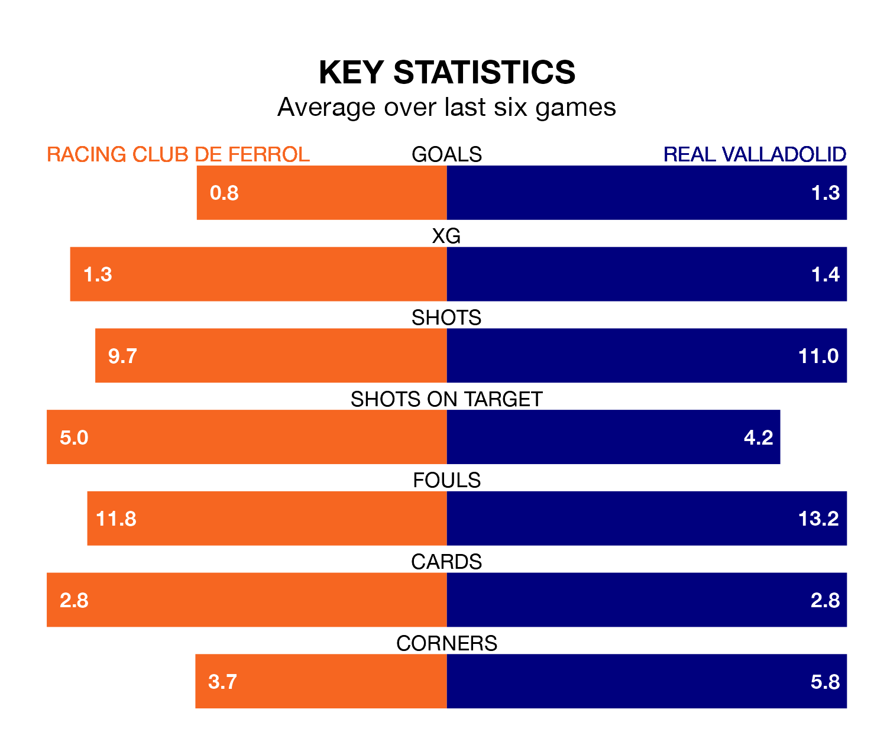

Racing Club de Ferrol face Real Valladolid on Sunday looking to secure a first win in six Segunda División games.
Racing have lost two and drawn three matches since they last earned three points – against Sporting Gijón on January 28.
They face a Valladolid side who have won one and drawn three over that time.
With 35 goals in 29 games so far this season, Racing are scoring more than average in the league with 1.2 goals per game. But they are conceding more than average too, letting in 34 goals at a rate of 1.2 per game.
Valladolid, meanwhile, are average scorers, with 1.1 goals per game. They have conceded 1.0 goal per game.
The away team are sixth in the table after 29 games, of which they have won 13 and drawn six, earning 45 points.
Ferrol are three places behind Valladolid in ninth, with 11 wins and 11 draws putting them on 44 points.
The hosts' Iker Losada Aragunde is among the league's most creative players, racking up six assists in 29 appearances so far this season, and holding third spot in the Segunda División's assist charts.
For Valladolid, Stanko Jurić has set up the most goals, having laid on five assists in 27 games.
Racing's last match was on March 2, a 2-2 draw against Racing Santander, with Álvaro Giménez getting the goals for Racing.
Valladolid lost 2-1 against FC Andorra last time out, on March 3, with Flavien-Enzo Boyomos on the scoresheet.
Updated: 09:34 (UTC), 08/03/24